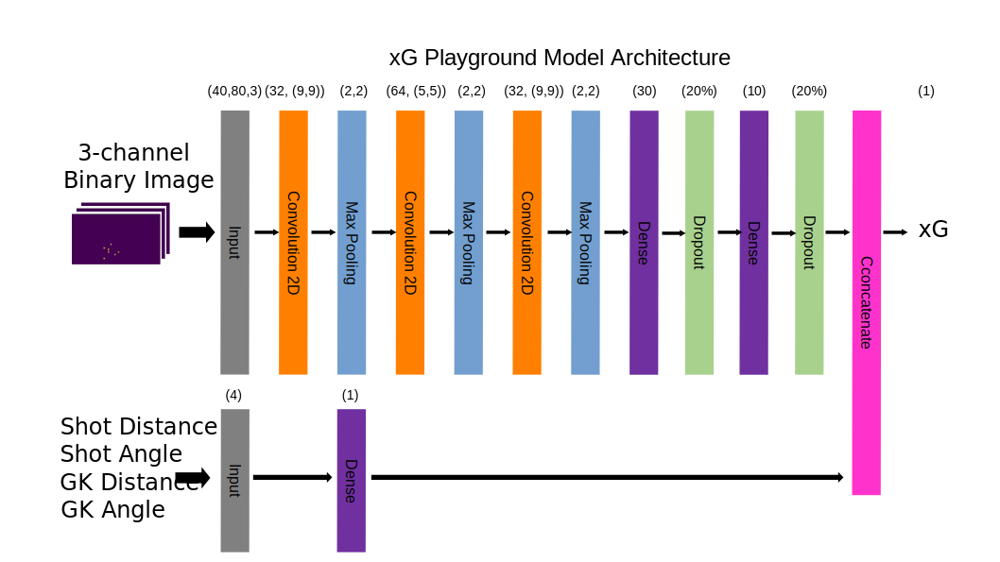

What is this site?
- xG Playground is a fully interactive, opposition-aware xG simulator.
- Use the tactics board above to move the ball, defenders and goalkeeper, and the xG of the scenario will update in real time.
How does the xG model work?
- Most xG models don't consider opposition defender and goalkeeper location when calculating xG. Even the more advanced models typically only consider the density of defenders between the ball and the goal, and whether or not the goalkeeper is out of position.
- This model uses a machine learning technique called Convolutional Neural Networks (CNNs) to attempt to understand the spatial relationships between the exact location of the ball, defenders, and the goalkeeper and how it relates to xG.
- The architecture of the model is shown below, and you can read a more thorough description of the motivation and application of CNNs to xG modelling here.

How accurate is the model?
Model accuracy compares favourably to leading xG models e.g. from StatsBomb over thousands of test shots. Check out the blog for a more detailed evaluation report of the model.
However, non-intuitive results for individual shot situations are common. In addition, this model does not consider important input variables such as whether the shot was taken first time, shot height, and shooter orientation and pose (e.g., whether the shooter is shooting on the turn). Something to bear in mind if you're looking to recreate a specific scenario from match footage!
Why does the xG change when I move players behind the ball?
- You might reasonably expect that when moving defenders that we know have no bearing on the probability of a shot resulting in a goal, the model xG should not change.
- With this model, that might not always be the case. This behaviour stems from the fact that like many neural networks, the model doesn't actually understand the system being modelled.
- That is, it doesn't know what football is, or what a good chance looks like in the way a human does. It has simply learned how to create a good approximation of shooting chance quality on shots it hasn't seen before. This is a crucial difference that is important to remember with AI as a whole!
Why do I get a ridiculously high/low xG in unusual scenarios?
- The model has tried to learn how valuable shooting chances are based only on a mid-sized set of real-life shots.
- So like many machine learning models it is good at predicting on unseen inputs from within the same distribution of the training set - realistic, common shot scenarios - but is basically guessing when it comes to inputs that differ considerably from those seen when training - unrealistic or less common shot scenarios.
- This is why, achieving high quality model performance across all possible input scenarios is huge challenge!
Do you have plans to improve the model?
- Yes, there are plans to improve the flexibility of the model and web app to allow the user to add/remove players, specify additional inputs such as whether or not the shot is a header, direct free kick, and other characteristics.
- These additions plus general model accuracy improvements would be reliant however on more, well-rounded training data being available.
- Although this model is trained on the incredibly generous StatsBomb open data shot freeze frames, the training data is a mixture of both men's and women's football. Not to mention a large chunk of shots are taken by Lionel Messi! The first thing to try could be to add more training data from StatsBomb’s latest data release
Can I make a web app like this myself?
- Yes! The code for both the model and the web app is publicly available. Visit the github repository and clone it. You'll find all the HTML, CSS and Javascript for this site in there.
- Next, take a look at this Jupyter notebook to train your own CNN xG model and save it in a web-friendly format. All you then need to do is make the site look how you want, drop your own model in, and you're done!